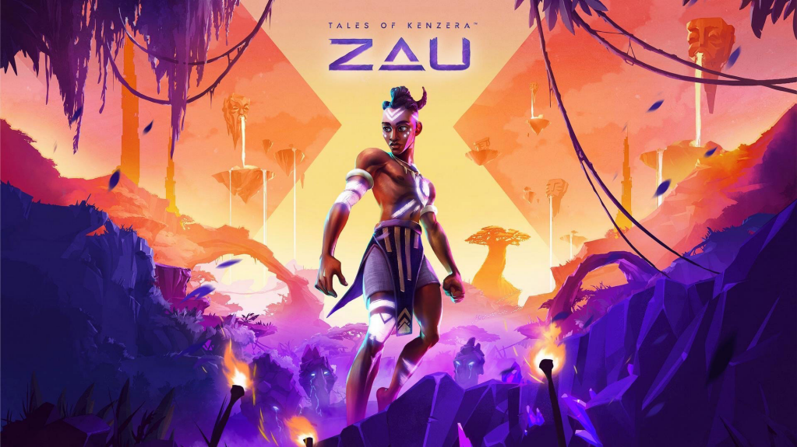
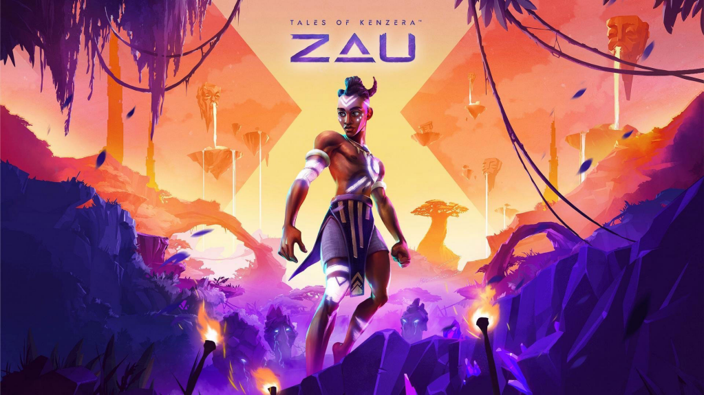

Grounded - No dia 16, temos mais um jogo da Microsoft chegando a novas plataformas. Grounded é um jogo de
sobrevivência multiplayer desenvolvido pela Obsidian Entertainment que coloca os jogadores para explorarem
um lugar perigoso, vasto e belo: um jardim. É necessário usar toda nossa pequeneza para se proteger de ameaças,
enfrentar insetos pouco amigáveis e desvendar o porquê vocês ficaram tão pequenos. Ele será lançado para Nintendo Switch,
PlayStation 4 e PlayStation 5, mas já está disponível para Xbox One, Xbox Series X e S e PC.
No Rest for the Wicked -sse aqui é para os fãs da duologia Ori. Dia 18 de abril, a
Moon Studios vai lançar seu novo jogo, No Rest for the Wicked, em Acesso Antecipado. Este Action RPG
estiloso, que está sendo descrito como um soulslike isométrico, traz uma dificuldade punitiva e uma
jogabilidade cadenciada, exigindo do jogador atenção e paciência para enfrentar todos os obstáculos
do caminho. Nesse lançamento inicial, o jogo vai contar com o primeiro capítulo da campanha, várias
lutas contra chefes, uma boa quantidade de armas, armaduras, habilidades e opções de crafting, desafios diários
e semanais e parte do conteúdo de endgame, aquele que só é desbloqueado após acabar a campanha. O Acesso Antecipado
será lançado apenas para PC, mas a versão final também vai chegar ao PlayStation 5 e Xbox Series X e S.
Tales of Kenzera: ZAU -Tá querendo um metroidvania bem diferentão? Dia 23 tem um
lançamento pra ti. Tales of Kenzera: ZAU foi desenvolvido pela Surgent Studios e será lançado pela
Eletronic Arts pelo selo EA Originals. O título acompanha um jovem em luto pela perda de seu pai que
decide ler a história do jovem xamã Zau, que faz uma barganha com o Deus da Morte para trazer seu
Baba de volta das trevas. Essa aventura se baseia muito na cultura bantus, um grupo etnolinguístico da
África Subsariana, e nas experiências de vida de seu diretor criativo, o ator Abubakar Salim.
Essa rica aventura estará disponível para PC, PlayStation 5, Nintendo Switch e Xbox Series X e S.
Another Crab's Treasure - O soulslike de caranguejo estará chegando no dia 25. Another Crab's Treasure
foi desenvolvido pela Aggro Crab Games, a mesma de Going Under, e vai acompanhar um caranguejo-eremita em busca de um tesouro
para recomprar a sua concha, que foi penhorada. Assim como outro jogo citado anteriormente, Another Crab's Treasure
possui um combate cadenciado e uma dificuldade punitiva, mas se destaca não só pela temática e pelas diversas opções de
conchas e armas, mas por suas variadas opções de acessibilidade. Ou seja, todo mundo vai poder jogá-lo, mesmo se não for muito chegado no gênero.
Ele será lançado para PC, PlayStation 4, PlayStation 5, Nintendo Switch, Xbox One e Xbox Series X e S.
Sand Land -é baseado no mangá de mesmo nome, feito pelo lendário mangaka Akira Toriyama,
e tem como protagonista o Príncipe dos Demônios, Beelzebub. Acompanhado de alguns heróis desajeitados,
ele vai em busca de um Lago Lendário escondido no meio do deserto. O que tem empolgado muitos jogadores
é que a locomoção é feita por um veículo completamente customizável, de cabo a rabo, que se transforma em
um mecha durante combates contra veículos inimigos.
Sand Land será lançado para PC, PlayStation 4, PlayStation 5, Nintendo Switch e Xbox Series X e S


 
